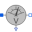
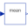
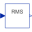
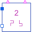

Thyristor1Pulse_R_CharacteristicControl characteristic of one pulse rectifier with resistive load |
Diagram
{kind=link}
Information
This information is part of the Modelica Standard Library maintained by the Modelica Association.
This example demonstrates the operational behavior of a single phase controlled rectifier with variable firing angle and resistive load. The average load voltage can be controlled by means of the firing angle.
Plot average voltage meanVoltage.v versus firingAngle pulse2.firingAngle to see control characteristic of this type of rectifier with resistive load.
Parameters (3)
| Vrms |
Value: 110 Type: Voltage (V) Description: RMS supply voltage |
|---|---|
| f |
Value: 50 Type: Frequency (Hz) Description: Frequency |
| R |
Value: 20 Type: Resistance (Ω) Description: Load resistance |
Components (11)
|  | voltagesensor |
Type: VoltageSensor |
|---|---|---|
| sinevoltage |
Type: SineVoltage |
|
| ground |
Type: Ground |
|
| currentSensor |
Type: CurrentSensor |
|
|  | meanVoltage |
Type: Mean |
|  | rootMeanSquareVoltage |
Type: RootMeanSquare |
| meanCurrent |
Type: Mean |
|
|  | pulse2 |
Type: VoltageBridge2Pulse |
| idealthyristor |
Type: IdealThyristor |
|
| resistor |
Type: Resistor |
|
| ramp |
Type: Ramp |